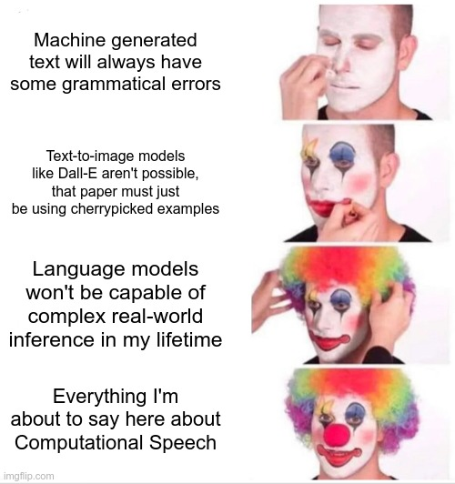
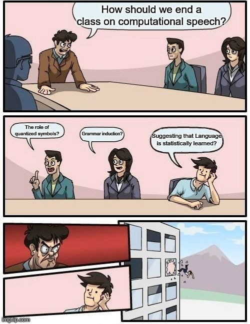

### Need some emergency wolf care? <audio controls src="https://savethevowels.org/168/wolfcare2024.mp3"></audio> <audio controls src="https://savethevowels.org/168/wolfcare_best2024.mp3"></audio> --- # Computational Speech Processing ### Will Styler - LIGN 168 --- ### Today's Plan - What's (probably) next for computational speech processing - What have we learned? - What does this all teach us about language? --- # What's (probably) next for computational speech processing --- ### We don't know what's next - We barely know what the computational speech processing world will look like in 2025 - Look back later in your career and laugh at how many things I got wrong - Maybe I'll even get a few things right! - ... but my track record isn't amazing ---  --- ### Let's give it a shot anyways! --- ### Deep Neural Networks will keep winning for NLP - Unless something better emerges, for wealthy languages, DNNs have won - There's not serious competition in ASR, TTS, Denoising, and otherwise - Improvements to LLMs will likely mean even stronger performance - This may just be in terms of greater complexity and parameter counts --- ### NLP will happen on other people's computers for a while - Unless we can improve on the compute/memory constraints, these will not be affordable to run at home - Many shareholders will be wealthier if those improvements don't happen - Remote models are closed by design, and privacy policies cannot be reasonably confirmed or trusted - Paywalls and data harvesting will continue to be the norm - **As a result...** --- ### Speech Processing (and AI) will be bastions of inequality - When core language technologies are kept proprietary and closed, they will only be available to people with money - Nobody will bother making good consumer ASR in minoritized languages and dialects - This will further incentivize use of wealthy languages - ... and further increase economic pressures towards language dormancy - If you need to speak American English or Mandarin to interact with computers most efficiently, *this is a substantial problem* --- ### Yet there is hope! --- ### We've seen open tools form infrastructure before - Open codecs are often preferable and quickly adopted - Unless you're trying to lock consumers into a particular ecosystem - Compression tools tend to be open, as they should be - Praat is free and open, as are most Python libraries - Linux is the only serious operating system for deploying 'AI' models --- ### Open Models can win - ['They have no moat'](https://www.semianalysis.com/p/google-we-have-no-moat-and-neither) - This is partly why we're seeing companies pushing for protective regulation - Major open models can still be competitive, as they build on each other! - Running them remains a logistical hurdle - Open models have strong equity benefits - It's not possible to fine tune a closed model for a smaller speech community - Any regulation which enshrines serious privacy will need to also force transparency - This will favor open code and open weights --- ### "OK, we get it Linux boy. Open is good." - My bad, rant slipped out. - Back to more concrete predictions... --- ### Linguists will shift their focus to validation and understanding - Even as building the models is increasingly statistical and Computer Science, studying them will remain linguistic - We'll use the same tools we've always used to understand speech-using humans, to understand speech-using computers - We'll learn how these models work by treating them like we already treat black-box language users --- ### More models will be multi-modal by design - Multiple encoders allow multiple kinds of input - We're likely already seeing this with GPT-4o - Separate ASR models could be replaced with speech encoders as an input to a general language model - Why bother with two tasks and models when one could do? - TTS will probably continue being its own task in the pipeline for a bit longer - There's less to be gained from direct-to-TTS output --- ### ASR may become a subtask of LLMs - Whisper's end-to-end, intergrated-LM model is unlikely to be an anomaly - Powerful ability to predict the next word is... uh... useful for ASR - This will help with many of the remaining world inference issues - e.g. Taking a wok from the Chinese restaurant --- ### TTS may move towards true end-to-end learning - Increases in memory or compute power will allow direct mapping from text to wave - The same could come from algorithmic improvements - Mel spectrogram vocoders will be adorable in retrospect - An artifact of a time where we could do better than parameters, but waves were too much - This will cause improvements in handling of difficult dialect issues - Text analysis will be a part of the learned embedding - Emotion will also be more 'human' as models predict tone alongside text --- ### This may lead to dialect embeddings - Current speaker adaptation approaches struggle with (e.g.) phone substitutions or major prosodic differences - Embeddings based on (and affecting) models which include text analysis, prosody, and more will allow more robust dialect differences to be mapped - This technology may be useful for sociolinguistic inquiry, broadly - ... and studying them could be wildly interesting! --- ### Speech Technologies will become more embedded in our lives - We will become quickly used to interacting with 'AI' agents by voice and speech - ... and we'll likely do it unknowingly more and more, too - The idea of an 'always on' AI assistant interacting by voice and speech may not be far off - Jarvis (Iron Man) or Jane (Ender's Saga) - Some devices will abandon conventional interfaces - [The Rabbit r1](https://en.wikipedia.org/wiki/Rabbit_r1) is a good (but bad) initial example --- ### ... and you'll understand how it all works! - (To the extent that we as a species do) - Future methods will probably be conceptually similar to current neural approaches - If not simpler! - Differences in architecture and process will vary, but statistical learning is statistical learning! - ... and current trends are towards "Input -> Magic -> Output" - Which brings us to an important question! --- # What have we learned? --- ### We looked at four main questions this quarter - How do computers turn speech into numbers (and back)? - How do computers *modify* speech? - How do computers turn speech into text? - How do computers turn text into speech? --- ### How do computers turn speech into numbers (and back)? - How do sound waves become binary strings? - How do we extract meaningful features (e.g. pitch, formants)? - How do we turn speech into a matrix of useful numbers? - How do we turn speech into a *compressed* and more efficient representation? --- ### How do computers modify speech? - How do we filter a speaker's voice out of noise? - How do we transmit a voice with encryption/efficiency? - How do we change the characteristics of a voice (autotune/resynthesis) --- ### How do computers turn those numbers into text? - Automatic Speech Recognition (ASR) - Legacy ASR Methods - Wake Word Detection and other methods for improving ASR in our lives - Determining the most probable string based on ambiguous words --- ### How do computers turn that text into speech? - Text-to-Speech (TTS, 'Speech Synthesis') - Legacy methods like Unit Selection - Modern Neural Models - Modifying the 'voice' of TTS models and copying others --- ### We also answered other questions along the way - How do we store sound on disk? - How do we collect speech data for building corpora? - How do cell phones send your voice over a bad connection? - How do deep neural networks work? --- ### ... and we thought about some of the hard questions - Where's the right balance between ease of use and privacy? - What kind of data *should* be used to improve these models? - When is it acceptable to use these to replace humans? - What *should* a computer sound like, anyways? - Is it OK to make these systems sound like a particular person? --- ### And we now understand every element of the spoken interaction pipeline! <img class='r-stretch' src='diagrams/speech_processing_pipeline.jpg'> --- ### We have covered a ridiculous amount of material this quarter - WAV FFT DCT LPC MFCC MP3 OPUS LID i-vector DNN CNN ASR TTS Wav2Vec2 - Not to mention the 500,000 various neural architectures we had to breeze by - I damned near apologize for the amount you all had to learn to do this right --- ### Yet, now you understand a *lot* - You understand why the Nyquist Theorem is a roadmap to a happy life - You know how your phone stores or streams that Daft Punk song, how it gets played back, and how it was created - You understand what's happening when your phone turns your words into text, badly - You understand why your phone might say /lɪgÉ™n/ for LIGN 168, but /É™lajn/ for 'align' - ... and you know how to steal your professor's voice for identity theft reasons - Enthusiastic consent is required, thanks. --- ## What did you learn that was particularly interesting to you? --- ### ... but this is LIGN 168 - Not ECE or CS or DSC 168 - So, why do linguists care about this? --- ## What does this teach us about language? --- ### Computational Speech Processing can be a very engineering-y field - Solving problems people have with computers with computers - Often, electrical engineers and data scientists and 'AI' people are leading the charge - For many, it's about language, not Language - "Every time I fire a linguist, the performance of the speech recognizer goes up" - [Frederick Jelinek](https://en.wikipedia.org/wiki/Frederick_Jelinek#cite_ref-6) - You can do a *lot* of computational speech processing without really understanding speech --- ### ... but we can learn a lot about Speech from the solutions! - How machines understand speech tells us how humans might understand speech - TTS systems tell us about what's fixed and varying, and how we train them tells us what 'matters' for perception - Computational measurement of speech has been instrumental (🤣) in advancing the field of phonetics - ... but the most important concept of all is... --- # Framing --- ### Wait, nevermind --- # Speech doesn't have to be special! --- ### Computers can *do* speech very effectively now - Our existing algorithms for processing sound are unreasonably effective at working on and improving speech signals - Current models are *really good* at understanding speech for people well-represented in the training data - Current models are *really good* at reproducing speech for dialects well-represented in the training data - We have *really good* engineering solutions to most computational speech problems (for wealthy languages and users) --- ### Yet, these algorithms are not speech specific - Compression just finds sources and filters, and that's not only an issue of speech - ASR can just be associating patterns in waves with patterns of letters and sounds - TTS can be done by creating images of spectrograms based on strings of letters - The thing that makes speakers different can be 'learned' by statistics in an embedding space --- ## Every speech task we considered appears to be solvable with statistical learning! --- <img class="r-stretch" src="ling_memes/statistical_learning.jpg"> ---  --- ### This doesn't mean humans are doing the same thing - We are better at this than machines, still, so maybe there's more to it than statistics - Or we're just deeper neural networks? - Perhaps we treat speech as *more special* than machines do, and that makes us able to learn faster and more robustly - Maybe we're doing more symbolic reasoning, a weakness of current DNNs - Maybe we just know more about the world, so we don't make certain classes of errors --- ### ... but it means the task is doable with just math! - Human speech doesn't need specific algorithms which include innate linguistic knowledge to be produced and perceived - Human speech doesn't need reference to phonemes or phonological rules to be produced and perceived - Human speech doesn't need to be treated any differently than any other waveform to be linked to linguistic representations - The same models which do vision, sequence understanding, and 'AI', can be applied to solve speech tasks --- ### So, we learn that speech doesn't have to be special to work - Speech processing doesn't even need to be done by humans to be effective - Yet... --- ### Studying these systems shows us how special speech is! - The signal is wildly complicated, needing incredible nuance to capture and measure it well - We are able to understand speech even when wildly distorted, modified, and resynthesized - Capturing 'basic' characteristics like speaker identity, emotion, and dialect requires vast complexity - Only after 70 years of speech research are computers able to approximate human perception and production of speech --- ### ... and it's worth remembering that ... <audio controls src="comp/tts_will_outro.mp3"></audio> --- <huge>Thank you!</huge>